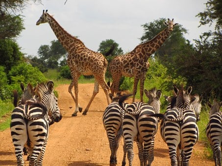
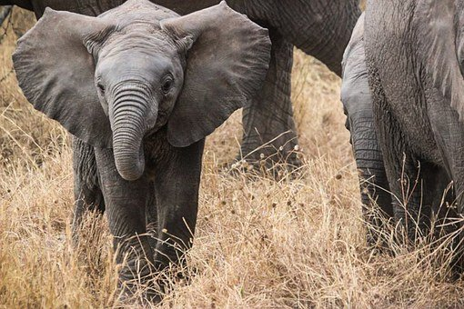

Ngorogoro Crater: An extraordinary expedition where a variety of animals are gathered in one and the same crater.
The crater of Ngorogoro is one of the 7 wonders of Africa and a UNESCO World Heritage Site.
It’s an old volcano more than 2 million years old that collapsed.
You will find more than 25 000 wildlife, lions, zebras, elephants and probably also rhinoceros.
See prices...

Serengeti National Park: Serengeti means in the Maasai language “Endless Plain”
This second wildlife park in Africa will amaze you with its surface area of 24 000 km2,
here the savannah stretches as far as the eye can see and is home to nearly 4 million wildlife.
A must-see for a safari in Tanzania, Serengeti Park is best known for its annual migrations of millions of wildebeest, zebras and gazelles.
A show that will amaze young and old alike.
See prices...